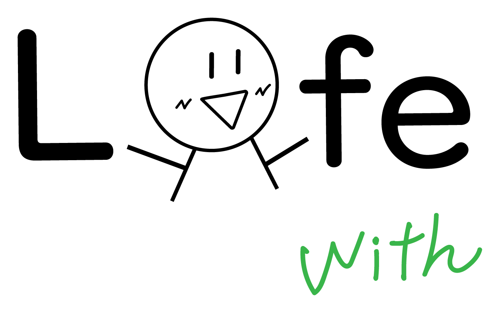

問いが先
社会的事象を単に調べるのではなく、時代背景や地域の願いと結び付けて考える問いを先に設計する。

鹿児島小社研 社会科AIプロンプト集鹿児島小社研 研修おみやげ
地域素材の教材化、問い返し、個別フィードバック、対話活動、振り返り分析まで。 社会科の授業づくりに合わせて、そのまま使える形で整理しました。
読み込み中
Gemini Flash Validation
24本のプロンプトを、鹿児島・桜島の架空条件でGemini Flashに順番に投入しました。 実際の返答傾向、使えそうな点、修正しておきたい点をプロンプトごとに確認できます。
検証結果を読み込み中です。
Design
生成AIを「答えを出す道具」にせず、問い・資料・見取り・対話・再構成を支える道具として置きます。
社会的事象を単に調べるのではなく、時代背景や地域の願いと結び付けて考える問いを先に設計する。
AIの出力は当たりをつけるために使い、公式資料・地図・年表・写真・聞き取りで必ず確かめる。
児童の記述を点数化して終わらせず、根拠・因果・立場・時代背景へ戻す問い返しを増やす。
個別フィードバックで整えた考えを、グループ対話、全体交流、個の再考察へつなぐ。
紙もデジタルもAIも、目的に合わせて選べる状態へ。学習ログは支援に必要な最小限で残す。
Links
研修資料、note、公開教材、研修後の入口をまとめています。
Feedback
いいね一覧をコピーしてアンケートに貼ると、次の研修やプロンプト改善に生かしやすくなります。 先生方の実践に合わせて、社会科専用の道具箱として育てていきます。